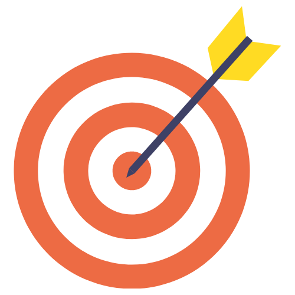
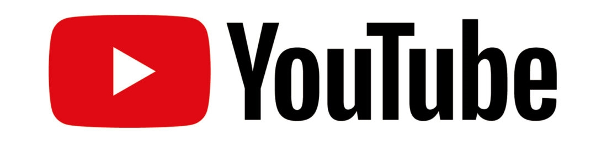
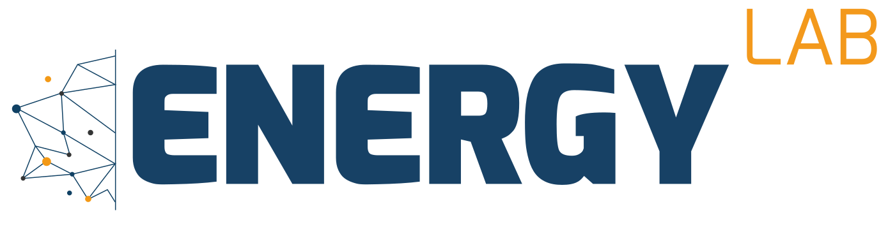

Project's purpose : production of regional meteorological data to allow a better forecast of the solar resource in the Indian Ocean
Action 1 : Station network expansion
Action 2 : Data accessibility
Action 3 : Project valorisation
Action 3 : Communication & Valorisation
Action 3 : Communication & Valorisation
Introduction of the project’s tools to the economic actors and the local populations to boost the solar energy sector
| Sept 19 | First IOS-net seminar
in Mauritius 2nd & 3rd seminar cancelled due to the pandemic |
| 2020-21 | Valorisation workshop cancelled due to the pandemic Recruitment of a technical coordinator (Morgane) |
| April 22 | Web-séries on the IOS-net project available on youtube |
| May, Juil, Sept & Nov 22 | Project valorisation missions in the 4 territories : conference, workshops, press interview... |
| May - Nov 22 | Creation of educational kits on solar energy and training of local facilitators to conduct workshops with youth in the 4 territories (TSOI) |
| Sept 22 | Closing seminar in Seychelles |
| Target: | Meteo services | R&D actors | General public |
|---|---|---|---|
|  | Project partners and owners of the stations | In the energetic sector | Including kids |
| Ensure the durability of the equipments | Make the solar data be known and used | Rase awarness about energy challenges | |
 |
Training sessions, maintenance guides | Conference, Climate Fresk exchanges | Climate Fresk, Conference, practical work with studients, TSOI, web-series |
Training session with Diego meteo services
Training session with MMS (Mauritius)
back
Conference with R&D actors at the Université des Mascareignes (Mauritius)
back
Climate Fresk with Business Mauritius
back
Climate Fresk, la Sentinelle (Mauritian press group)
back
Climate Fresk, Institut Français de Maurice
back
Conference, Alliances Françaises, Rodrigues
Conference with ESPA students (Madagascar)
Conference with ESTI students (Madagascar)
back
Diego station visit with IST-D studients
back
Transition Sciences Océan Indien (TSOI)
| Educational kit Les Petits Débrouillard |
Elaboration of an educational kit with animation tools (games on a tablet, practical experiments, information sheets...) on the energy challenges. |
| Facilitator training Les Alliances Françaises |
Training of local facilitators selected through the Alliances Française network who will conduct the workshops and manage the educational kits |
IOS-net Web-series on Youtube
7 episodes of 3-4 minutes are available on the ENERGY-Lab Youtube channel to present the project, the partners, the work performed...


back